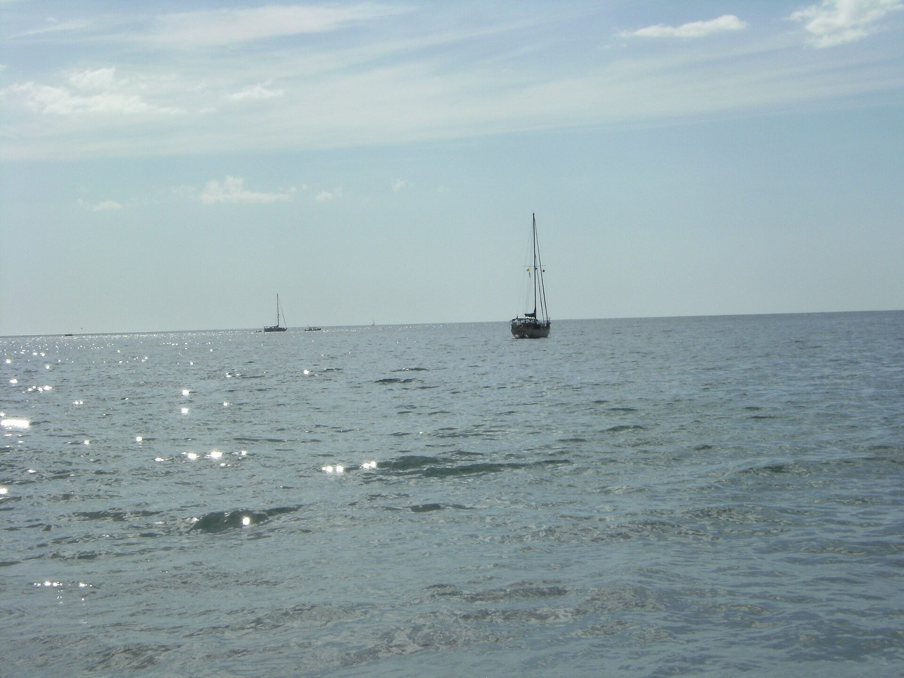
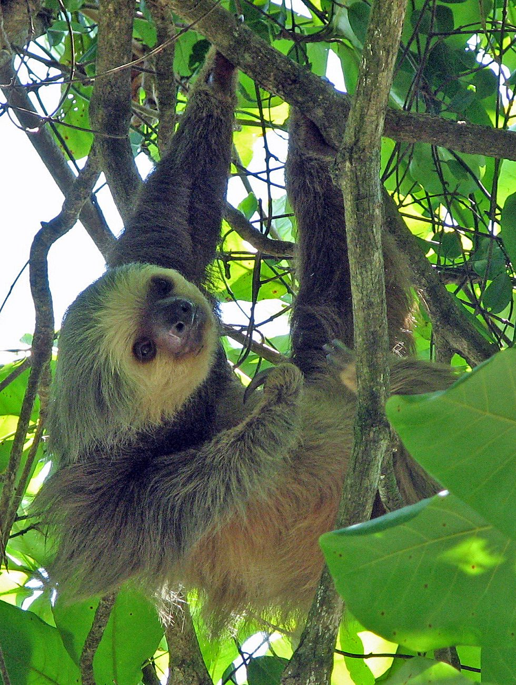
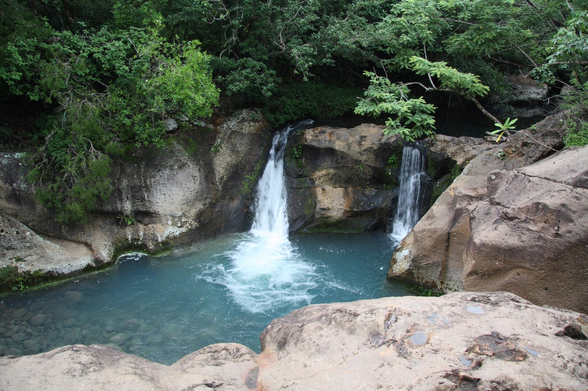
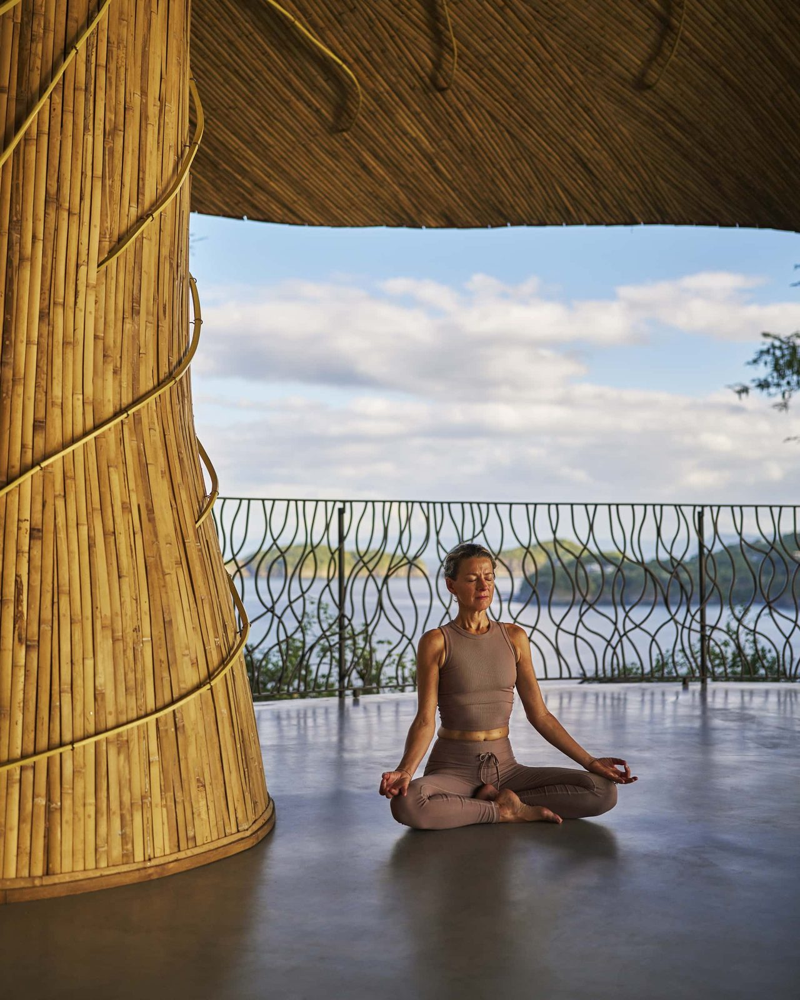
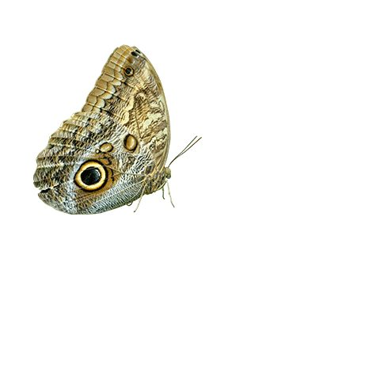

Arrive Liberia
One-stop flight via DFW (~10hrs total), transfer to your resort.
Rainforest-meets-beach, wildlife-forward — sloths, monkeys, volcano views, zip-lining, all a short drive from your resort. More "nature adventure with beach downtime" than pure relaxation. 7 days on the ground, about 8 door-to-door.


Best of a tough window: July, if a brief mid-summer dry spell ("veranillo") shows up — not guaranteed.
Avoid: September–October, the wettest months in Guanacaste.
July–October is genuinely the toughest window on this list to time well. Mornings tend to be clear with afternoon downpours rather than all-day rain.
A week at a well-reviewed all-inclusive on the Papagayo peninsula (Occidental Papagayo, ~$180/night, meals and drinks bundled) plus excursions comes to around $2,000. Even splitting the stay with a few nights at the Four Seasons (~$1,200+/night) keeps the total around $5,000. Costa Rica genuinely runs cheaper than every resort-island destination on this list.
Very uncomfortable and fairly oppressive away from the beach — this is the wettest, muggiest destination on the list.
One-stop flight via DFW (~10hrs total), transfer to your resort.
Settle in, easy first day.

Waterfalls, hot springs, volcanic mud baths.
Recommended: Rincón de la Vieja hot springs + mud bath tour ↗One adventure-heavy day.
On the water.
Sloths, monkeys, guided nature walk.
Spa.
Fly home.
On the Papagayo peninsula, meals and drinks bundled in — the value pick that makes this destination the cheapest on the list.
Same peninsula, the splurge — pricier than the original estimate suggested.

Near Arenal, a different region — only if you're open to a two-region trip instead of staying put in Guanacaste.
